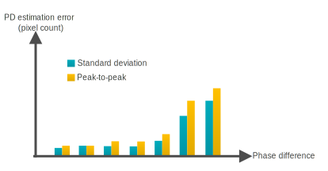
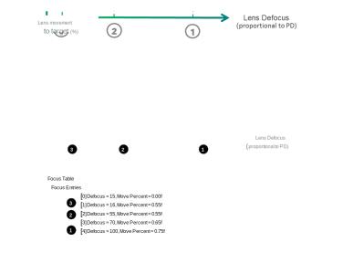

In PDAF, the course search controls the lens movement to the focus position. It is an iterative process based on steps associated with the phase difference estimation. A higher phase difference means higher disparity and therefore a greater defocus value. However, as illustrated in the following figure, when the phase difference is large, then there is a correspondingly high noise level. When the phase difference is small, then the noise level is also small. As the lens moves closer to the optimal focus, there is less noise.
Because of this, it is necessary to perform autofocus as an iterative process where the lens is moved gradually to achieve optimal focus. The iterative process results in a smooth autofocus converge and prevents overshoot behavior.
To make AF smooth, PDAF uses iterative movements to provide a good AF converge user experience and to prevent overshoot behavior. The PDAF Focus Table contains entries that specify the percentage of lens movement required based on the phase difference estimation. The Move Percent tuning parameter breaks down one large lens movement into small lens movements based on the original defocus distance.
Assume that phase difference estimation in the preceding graph is 100 µm.
A smaller percentage for a higher reported defocus value can prevent inaccurate AF jumping and create a smoother user experience because of the smooth focus tracking. A higher percentage means less iterative lens movement, faster AF speed, and aggressive focus tracking. However, this can result in overshooting the target. The lens movements necessary to correct the overshoot produce an unsmooth AF converge and a poor user experience.